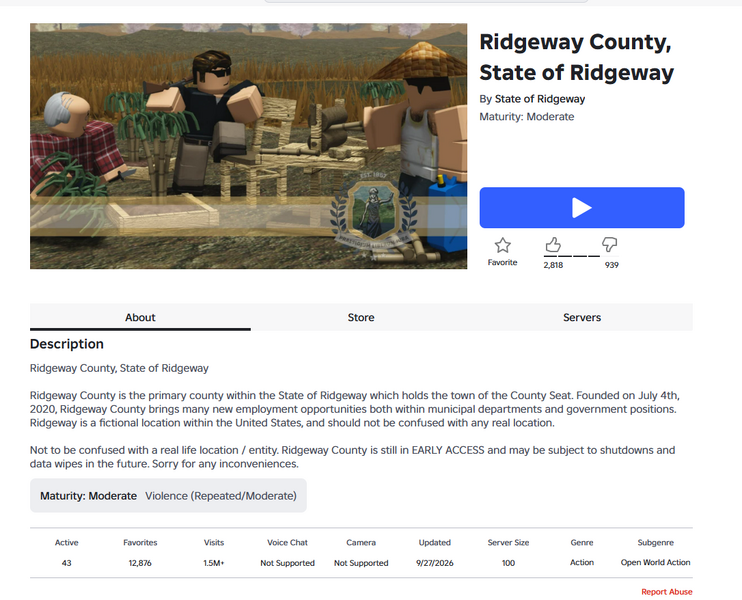
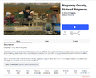

File:Ridgeway-Roblox-experience-1-October-2026.png


Size of this preview: 742 × 600 pixels. Other resolution: 1,086 × 878 pixels.

Original file (1,086 × 878 pixels, file size: 534 KB, MIME type: image/png)
User-supplied screenshot of the official Ridgeway County experience page. Original photographer unknown. Contributor reports capture around 1:30 a.m. Eastern on 1 October 2026; no capture clock appears in the image. Displays 43 active players, 1.5 million-plus visits and an update date of 27 September 2026.
File history
Click on a date/time to view the file as it appeared at that time.
| Date/Time | Thumbnail | Dimensions | User | Comment | |
|---|---|---|---|---|---|
| current | 05:47, 1 October 2026 |  | 1,086 × 878 (534 KB) | Admin (talk | contribs) | Add sourced illustration for Ridgeway history |
You cannot overwrite this file.
File usage
The following page uses this file: